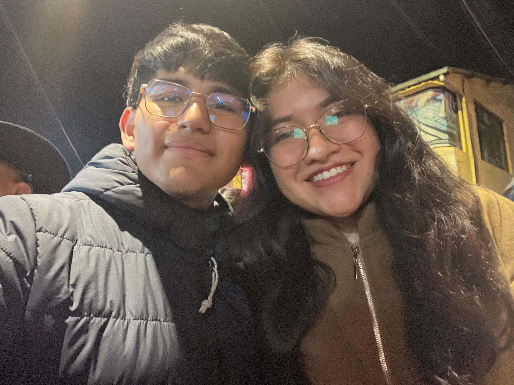
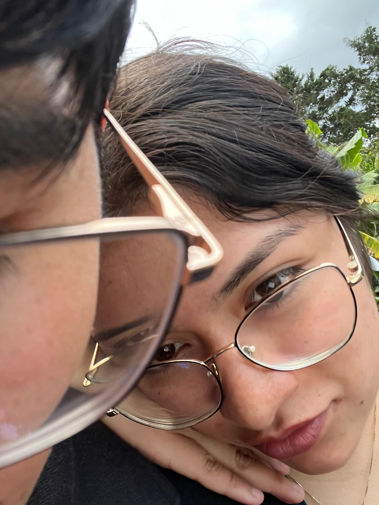
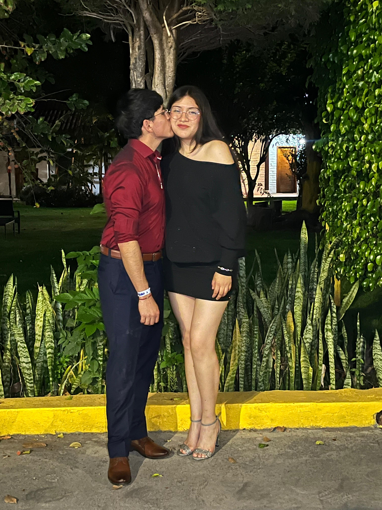
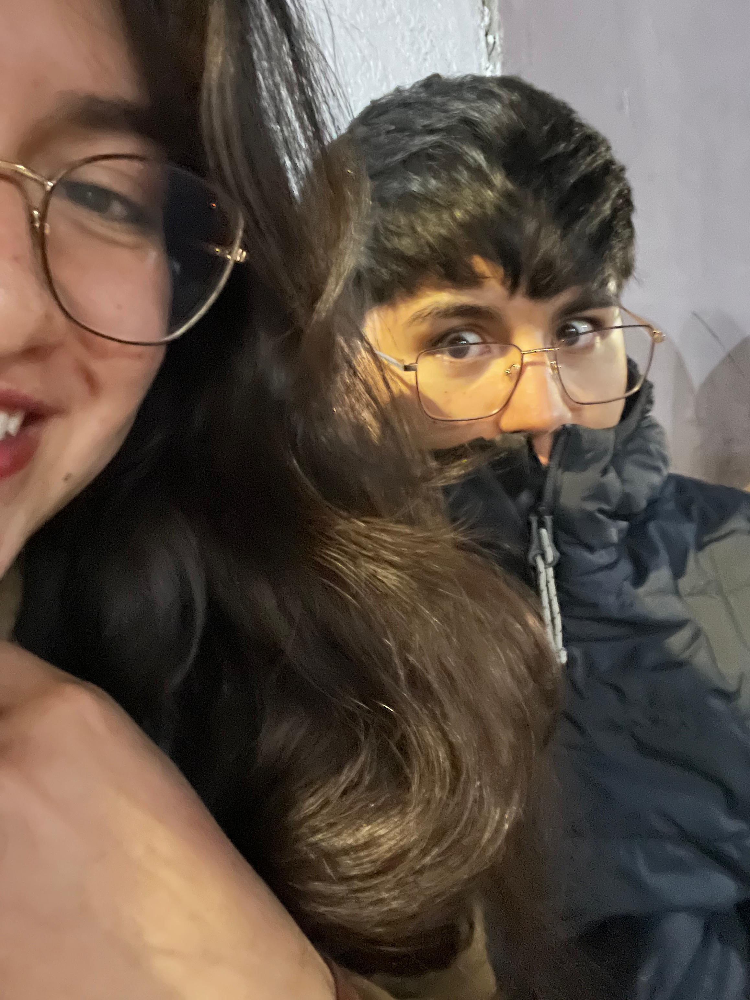
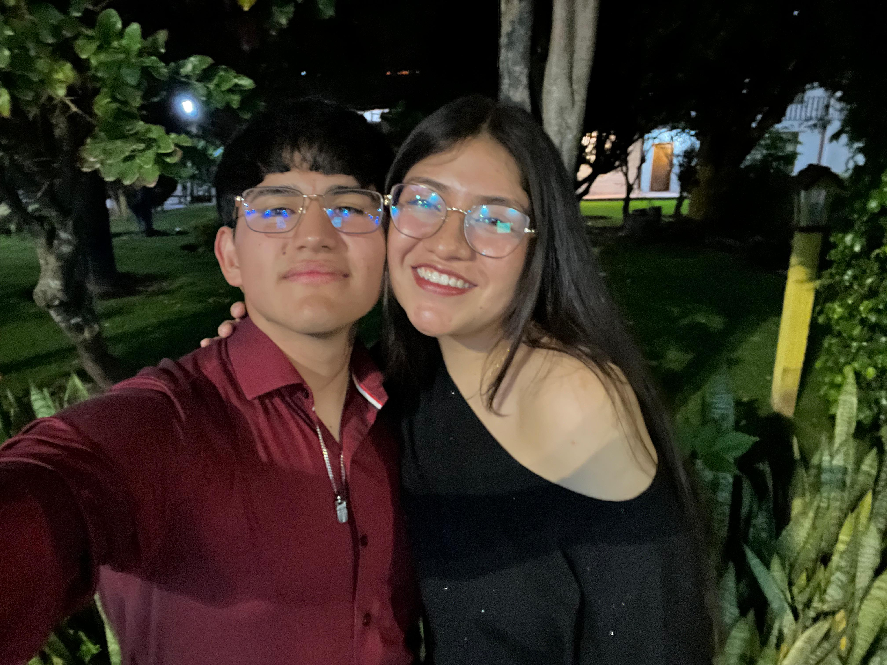
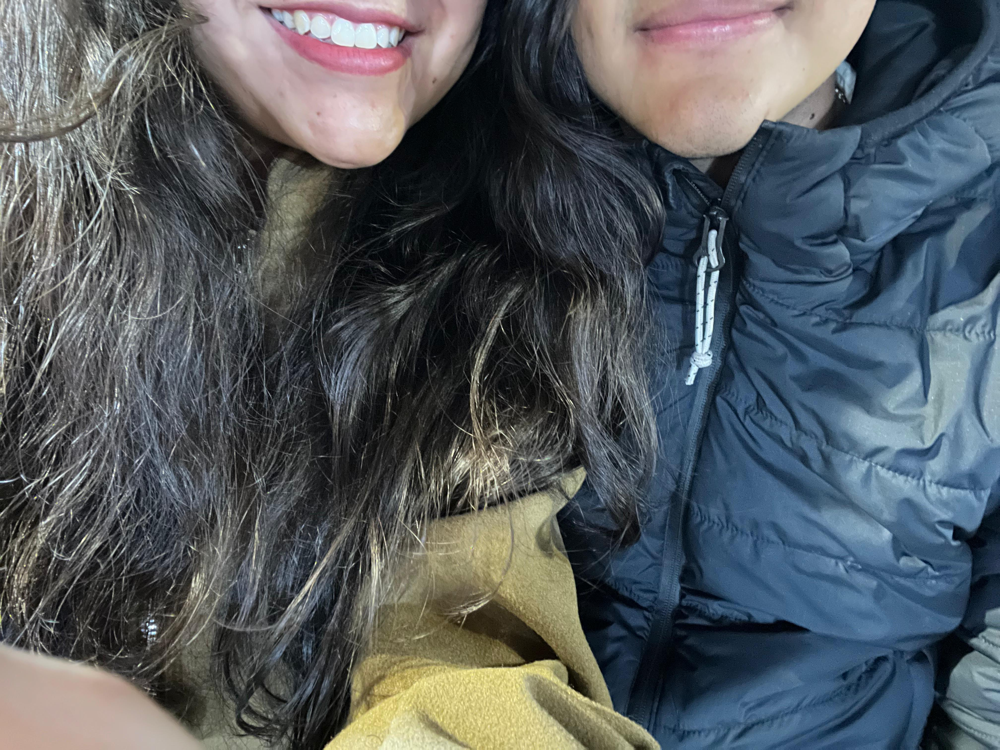
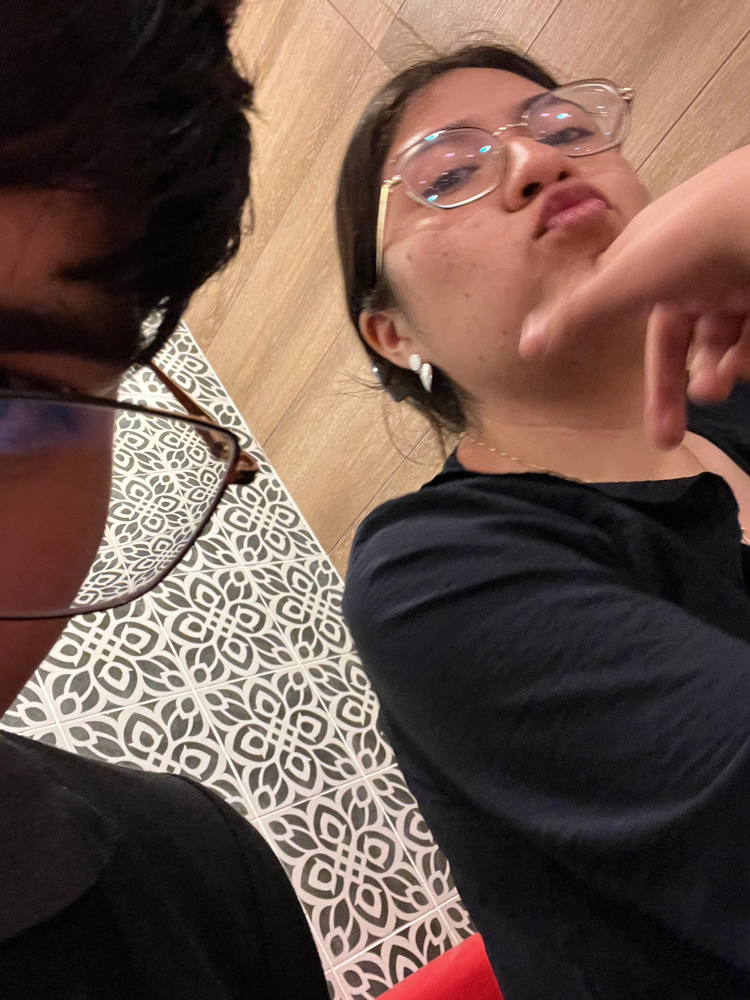
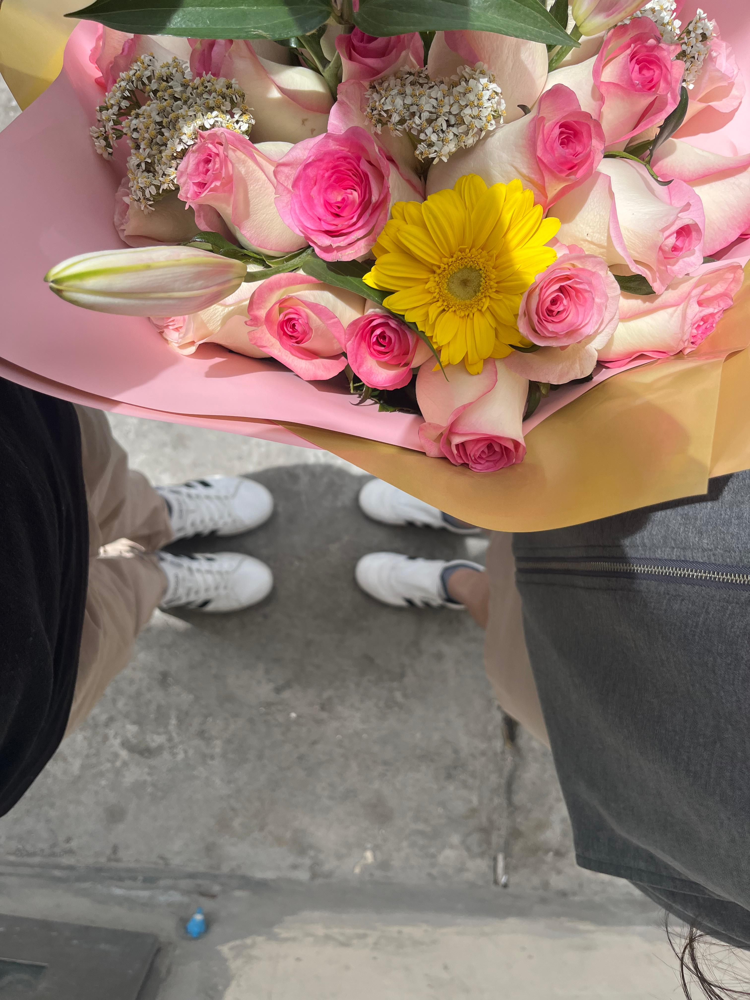

Tengo una pequeña sorpresa para La Reina de mi Corazón...
Nació un ramo especialmente para usted.
Quería hacer algo diferente para recordarle lo especial que es para mí. 💛

Un recuerdo del mejor día de mi vida. 💛

Su belleza no entiende de fronteras. ❤️

Aun recuerdo esa noche y lo guapa que se veía. 😍

Las mejores fotos son las que no nos esperamos. 👀

A su lado la felicidad florece más y más. 💐

Su sonrisa tan bella que hace que me derrita por usted. 😁

Con usted mi niño interior se siente feliz y tranquilo. ❤️

Las flores son un pequeño homenaje a su hermosura. 🌹
Con cariño,
Jorge 💛
Estas flores amarillas son para ti, Belen 🌷💛